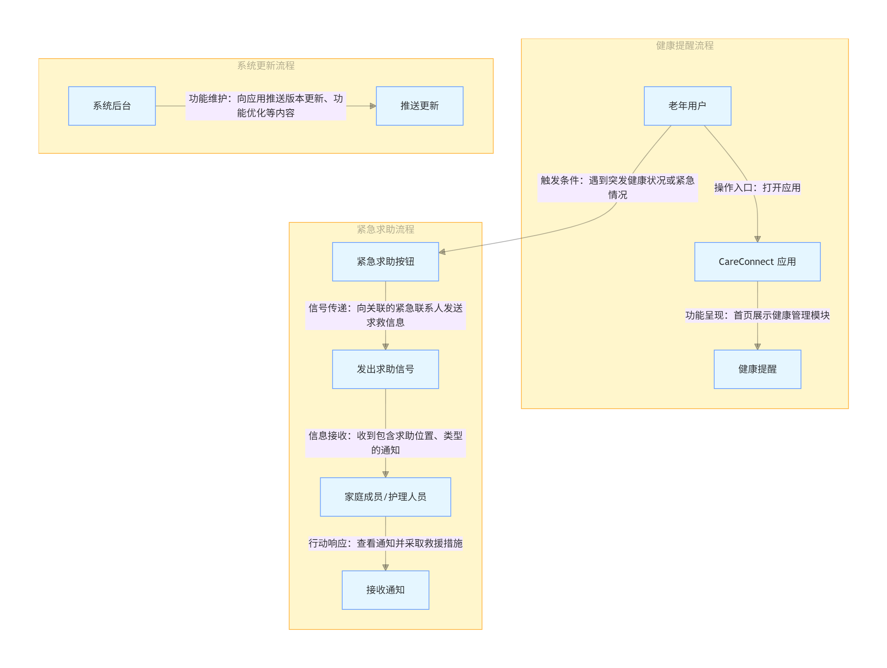

团队简介
团队名称：CareConnect
我们聚焦老年人、残障人士、低收入与偏远地区居民等群体，目标是通过无障碍、低门槛的移动服务提升其生活便利性与社会参与度。
王义康 — 团队负责人，主要负责项目总体规划、网站搭建、数据分析。
郭清昊 — 技术负责人，负责用户研究设计、问卷设计与数据可视化实现。
韩腾飞 — 用户体验设计师，负责访谈记录整理、界面与信息架构设计。
项目提案
项目主题：基于无障碍设计的智能生活服务助手
项目目标：通过访谈与问卷收集边缘化群体（老年人、残障人士、低收入与农村居民等）的真实生活需求，分析他们在使用智能设备与获取社会服务时的困难与痛点，设计一款集成语音播报、离线导航、一键求助与政策提醒的智能手机应用。
研究背景：随着社会数字化转型的加速，弱势群体在信息获取与服务使用上面临“数字鸿沟”问题。CareConnect 致力于通过人性化、可访问的技术设计，提升他们的生活便利性与社会参与度，实现科技普惠与社会包容。
主要研究问题：
- R1：不同群体（老年人、残障人士、低收入群体、农村居民）在日常生活中面临哪些信息与服务使用障碍？
- R2：语音播报、离线功能与界面简化等无障碍设计如何影响用户的使用体验与满意度？
- R3：如何在满足易用性的同时，保障隐私安全与政策信息的可靠传递？
研究方法：采用质性研究（深度访谈）与量化研究（问卷调查）相结合的混合方法，提炼关键痛点并形成设计洞察，为后续原型开发提供依据。
数据分析
数据收集:
我们进行了 4 份结构化访谈与 12 份问卷调查（含原始数据表）。
数据分析:
我们对收集到的数据进行分析，对问卷数据使用可视化工具进行数据分析，对访谈记录利用亲和图的方法进行分析，这里是我们的数据分析结果。
- 数据分析报告（Lab 5） - 点击查看完整报告
设计与分析
Flow Model
在此部分，我们展示了CareConnect的用户交互流程图，描述了不同用户之间的关系及信息流动：
HMW 问题
- HMW使老年人能够轻松访问与理解健康和政策信息？
- HMW让残障人士通过语音与设备互动，而无需传统的物理输入？
- HMW在紧急情况下快速通知家人或护理人员并获得帮助？
- HMW减少用户对新技术的恐惧，尤其是年长用户？
- HMW让不同文化背景和需求的用户都能获得量身定制的服务？
- HMW确保用户的隐私与数据安全，特别是老年人群体的个人健康信息？
用户画像
以下是我们为CareConnect应用设计的两个主要用户画像：
Persona 1：李大爷（65岁，独居老年人）
- 背景：李大爷是退休老教师，独自生活，行动不便，常常需要外界帮助。
- 目标：希望有一款简单易用的应用，帮助他获取健康提醒、社区活动信息，并能在遇到紧急情况时联系家人。
- 需求：语音播报、健康提醒、紧急求助按钮、离线功能等。
Persona 2：小张（32岁，残障人士，办公工作人员）
- 背景：小张天生视力障碍，依赖盲文和语音与外界交互，工作时使用电子设备。
- 目标：希望找到一款无障碍的智能助手，能提供语音功能，帮助自己管理日常生活。
- 需求：语音助手、盲文支持、紧急求助功能等。
用户故事板
以下是两个关于用户如何使用CareConnect应用的故事板：
- 李大爷使用“CareConnect”获取健康提醒: 李大爷坐在家中，通过语音播报得到健康提醒，并轻松管理日常健康。
- 小张使用“CareConnect”紧急求助: 小张在公司加班时突发不适，通过语音命令触发紧急求助，并通知家人。
----------------------------------------------------------------------------------------------------------
详见实验报告。
- 设计与分析（Lab 6 & Lab 7） - 点击查看完整报告
项目文档
查看或下载项目相关PDF文档：